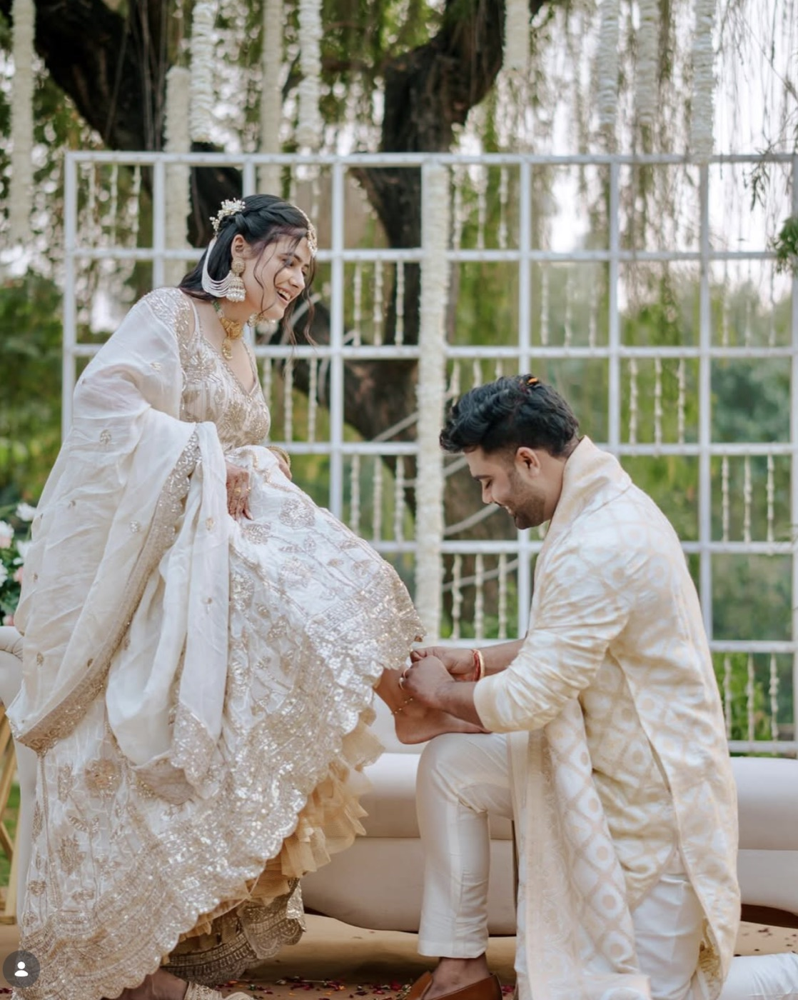

Illustrated Frames
Hand-drawn, watercolor-paper containers that wrap a real photo or reel cover. The illustration is the frame; the photograph inside is the only image that's real. Pure CSS + inline SVG — no baked text, fully responsive.
the reel frame
.ill-reel — 9:16 sketched film / phone frame · play overlay · bottom ledge
Desktop
Mobile · 360px column
the taped instant
.ill-polaroid — white mat · washi-tape corners · handwritten caption ledge
Desktop

Mobile · 360px column
the torn card
.ill-card — torn-paper index card for carousel covers · ruled chin
Desktop
Mobile · 360px column